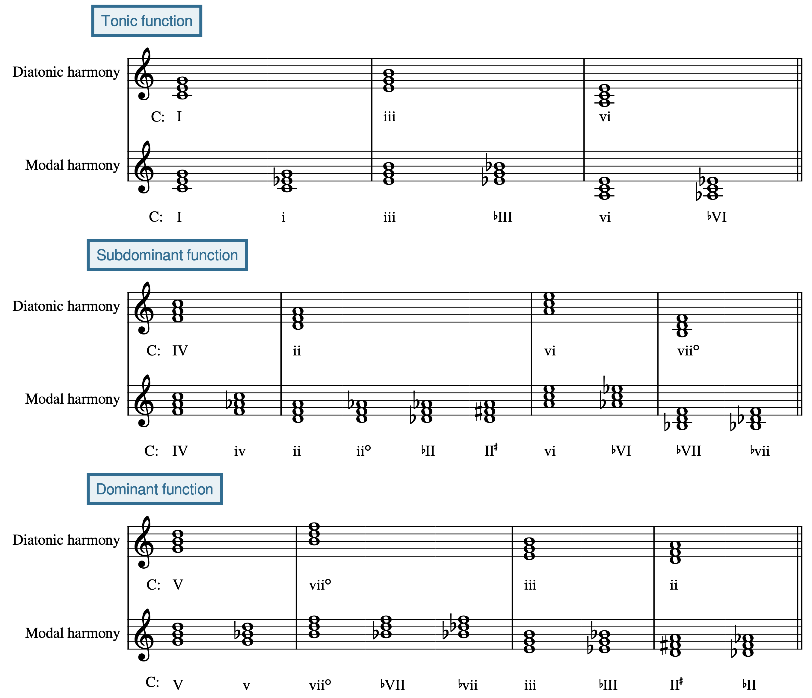
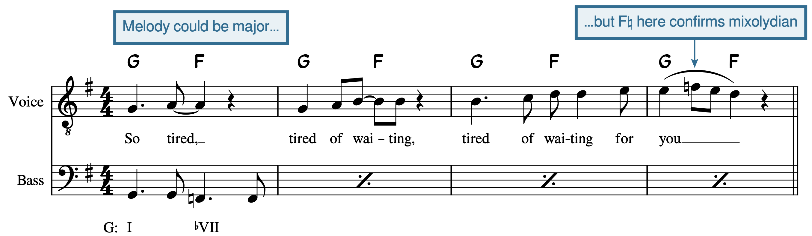
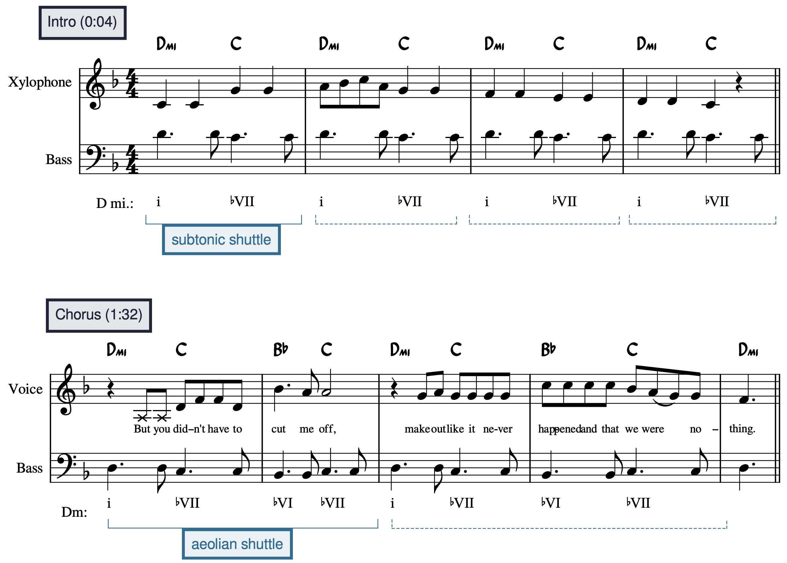
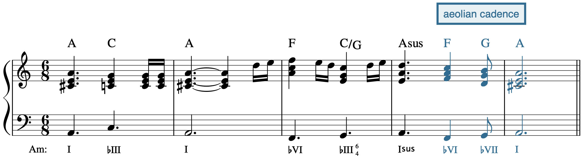
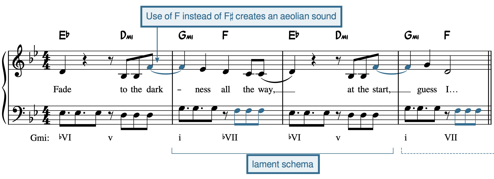
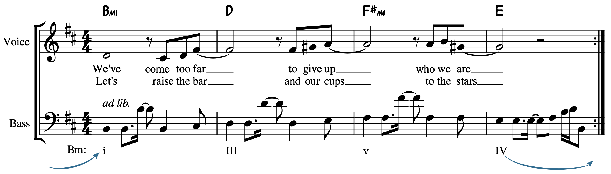
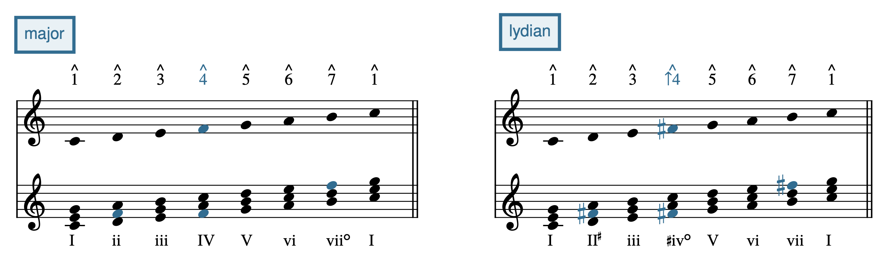
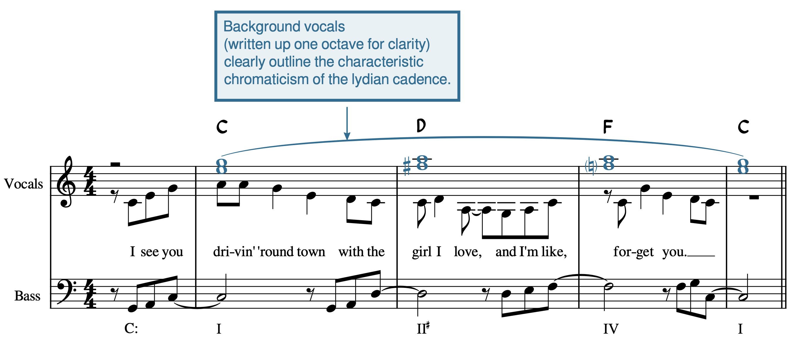
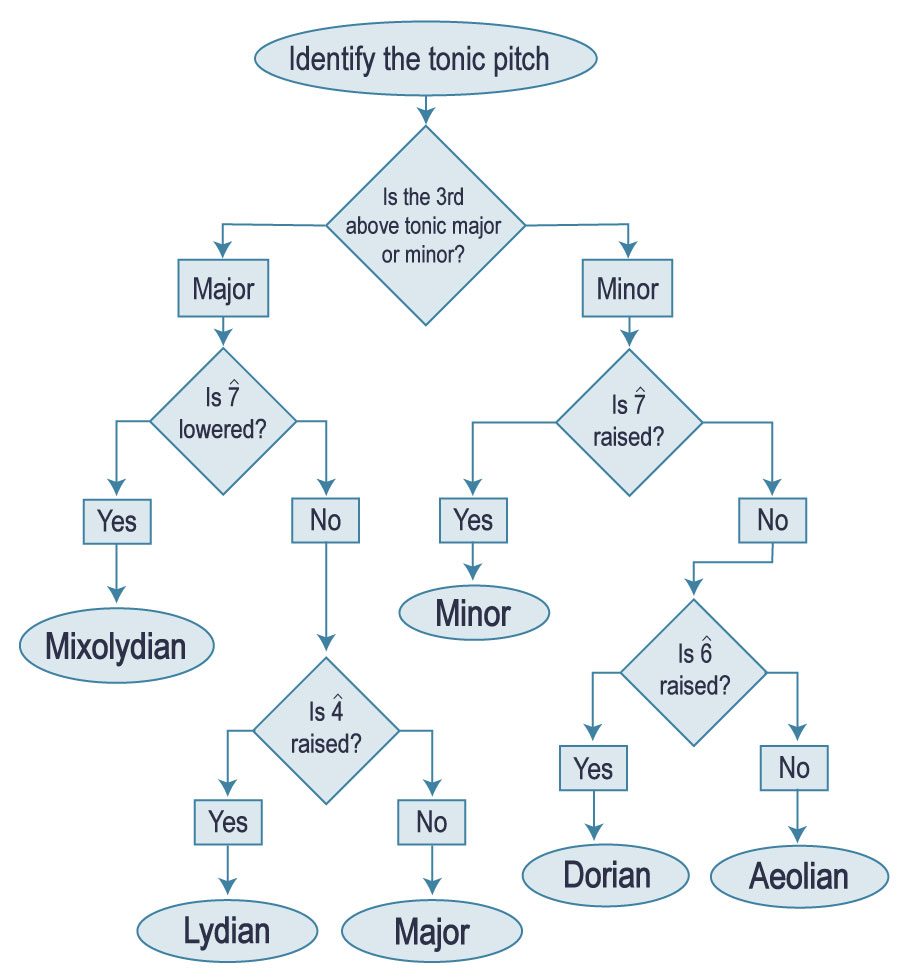

Open Music Theory：繁體中文版
調式圖式
重點整理
- 許多流行歌曲使用的和弦進行，會暗示大、小調以外的調式。
- 使用某個調式圖式，不代表整首歌都嚴格維持在那個調式。
- 可以將調式與大調、自然小調比較，找出構成其聲響特色的特徵音。
- 混合利底安圖式：
- 雙重變格：♭VII–IV–I。
- 下主音往返：I–♭VII。
- 愛奧利安圖式：
- 下主音往返：i–♭VII，與混合利底安相同，但主和弦改為小和弦。
- 愛奧利安往返：i–♭VII–♭VI–♭VII。
- 愛奧利安終止：♭VI–♭VII–i，或以I結束。
- 哀嘆：i–♭VII–♭VI–v。
- 多利安圖式：
- 多利安往返：i–IV。
- 利底安圖式：
- 利底安往返：I–II♯。
- 利底安終止：II♯–IV–I。
本書從不同角度討論調式。更多說明請見〈自然音調式入門（一般介紹）〉、〈和弦—音階理論（爵士）〉、〈自然音調式（二十／二十一世紀）〉與〈運用調式、音階與音集分析（二十／二十一世紀）〉。
「調式」是個十分複雜的術語。作為音樂學標準學術百科全書的《Grove Music Online》，其調式條目由九位作者共同撰寫，原文指出篇幅達238頁（Powers等人，2001）。因此，即使你認為自己已了解調式，學習它在流行音樂中的用法時，仍不妨暫時放下既有認識。
本章討論調式如何出現在流行與搖滾音樂的特定和弦圖式中，主要依據Nicole Biamonte（2010）與Philip Tagg（2011）的研究。先比較調式和聲與自然音和聲的功能，再依所借用的調式，分組介紹常見圖式。
依主和弦是大和弦還是小和弦，將調式分組，有助於聽辨調式片段，見例1。上排的第三級[latex]\hat3[/latex]與主音相距大三度，即mi，包括大調、混合利底安與利底安；下排的第三級[latex]\hat3[/latex]與主音相距小三度，即me，包括愛奧利安、多利安與弗里吉安。例1也顯示這些調式與大、小調的差異：以較淺顏色標出的音，相對於大調或自然小調有所改變，稱為該調式的特徵音。[1]虛線圓弧連接這些對應關係。
- C major＝C大調；
- C mixolydian＝C混合利底安；
- C lydian＝C利底安；
- C aeolian (natural minor)＝C愛奧利安（自然小調）；
- C dorian＝C多利安；
- C phrygian＝C弗里吉安。
- 上排以大調比較B→B♭及F→F♯；
- 下排以自然小調比較A♭→A及D→D♭。
例1。依大、小主和弦分組的調式；虛線連接各調式的特徵音與大調／自然小調中的對應音。
查看英文原文
Key Takeaways
- Many pop songs use harmonic progressions that imply modes other than major/minor.
- A modal schema may be used without the entire song being strictly within that mode.
- Modes may be compared to major and natural minor to understand what characterizes their sound (their color notes)
- Mixolydian schemas:
- Double plagal ♭VII–IV–I
- Subtonic shuttle I–♭VII
- Aeolian schemas:
- Subtonic shuttle i–♭VII (same as mixolydian, but with a minor tonic)
- Aeolian shuttle i–♭VII–♭VI–♭VII
- Aeolian cadence ♭VI–♭VII–i (or I)
- Lament i–♭VII–♭VI–v
- Dorian schemas:
- Dorian shuttle i–IV
- Lydian schemas:
- Lydian shuttle I–II♯
- Lydian cadence II♯–IV–I
This book covers modes from many different angles. For more information on modes, check Introduction to Diatonic Modes (general), Chord-Scale Theory (jazz), Diatonic Modes (20th/21st-c.), and Analyzing with Modes, Scales, and Collections (20th-/21st-c.).
"Mode" is a really complicated term. The article on mode in Grove Music Online (Powers et al. 2001), which is the standard academic encyclopedia for musicology, is 238 pages long and has nine authors. This means that, even if you think you already know about modes, you may want to set that knowledge aside before learning how modes are used in pop music.
This chapter discusses modes as they appear in certain schematic chord progressions in pop and rock music. Most of this information is based on the work of Nicole Biamonte (2010) and Philip Tagg (2011). After showing the function of modal harmonies as they compare to diatonic harmonies, common modal schemas will be introduced, grouped by the mode they borrow from.
Grouping modes by whether the tonic is major or minor helps with aural identification of modal passages. This grouping is represented in Example 1. The top line shows modes whose [latex]\hat3[/latex] is a major third above tonic (mi): major, mixolydian, and lydian. The bottom line shows modes whose [latex]\hat3[/latex] is a minor third above tonic (me): aeolian, dorian, and phrygian. Example 1 also illustrates what differentiates certain modes from major or minor. Each mode has exactly one pitch shown in a lighter color; this pitch is inflected when compared to major/minor. These special pitches are referred to as the color note of each mode.[1] These relationships are shown with the dotted slurs.
Example 1. Modes grouped by major vs. minor tonic, with dotted slurs connecting the distinctive color pitch of each mode with its major/minor counterpart.
{kind=link}

- Tonic function＝主功能；
- Subdominant function＝下屬功能；
- Dominant function＝屬功能。
- 每組的Diatonic harmony＝自然音和聲，Modal harmony＝調式和聲；
- C:表示以C為主音。
- 主功能組比較I／i、iii／♭III、vi／♭VI；
- 其餘兩組也列出小、大、減及降號側變體，部分和弦跨組出現。
圖上II♯指把ii的三音升高成大和弦，並非升根音。
這張和聲功能圖，有助於理解為什麼某些調式進行，和自然音進行一樣具有朝目標前進的感覺。
查看英文原文
Function of Modal Harmonies
You may already have learned about tonic, subdominant, and dominant function in diatonic harmony. Modal harmonies basically align in function with their diatonic counterparts, although the additional modal inflections create greater overlap between these functions. This is summarized in Example 2.
This illustration of harmonic function may help you to understand why certain modal progressions seem as goal-oriented as diatonic progressions.
混合利底安的特徵音是te（[latex]\downarrow\hat{7}[/latex]），見例3。大調流行歌曲中的♭VII，借自混合利底安調式。♭VII通常具有屬功能；在雙重變格與混合利底安終止圖式中，可以把它理解為傳統大調V和弦的替代（例4）。
{kind=link}
- C major＝C大調；
- C mixolydian＝C混合利底安。
- 上方比較第七級B與降第七級B♭；
- 下方由I–ii–iii–IV–V–vi–vii°–I，變成I–ii–iii°–IV–v–vi–♭VII–I，藍色標出相關變音。
例3。[latex]\downarrow\hat{7}[/latex]（te）是混合利底安的特徵音。重要的混合利底安和弦v與♭VII都包含此音；iiio不在本章常用和弦之列。
- Double plagal＝雙重變格；
- Subtonic shuttle＝下主音往返。
左框：B♭（♭VII）相當於F調的IV，因此產生兩次連續變格進行，以圓弧連接。
右框：往返圖式在兩個和弦之間不斷來回。
原譜右側使用反覆記號和雙向箭頭，不另標終止。
例4。雙重變格與下主音往返，是兩種特別常見的混合利底安進行；原文在此將後者稱為「混合利底安終止」，名稱差異請見上方譯註。
查看英文原文
Mixolydian: ♭VII
Mixolydian's color note is te ([latex]\downarrow\hat{7}[/latex]), as shown in Example 3. In major-mode pop songs, the ♭VII chord is borrowed from the mixolydian mode. ♭VII typically has dominant function, and you might think of it as a substitute for the traditional major-mode V chord in both the double plagal and mixolydian cadence schemas (Example 4).
Example 3. [latex]\downarrow\hat{7}[/latex] (te) is the color note of the mixolydian mode. Important mixolydian harmonies have that color note in them: v and ♭VII. (iiio is not used.)
Example 4. The double plagal schema and the mixolydian cadence schema are two especially common mixolydian chord progressions.
雙重變格
〈以藍調為基礎的圖式〉章詳細討論的雙重變格圖式♭VII–IV–I，也屬於混合利底安圖式，因為它使用大主和弦及[latex]\downarrow\hat{7}[/latex]，即te。
查看英文原文
Double plagal
The double plagal schema, ♭VII–IV–I, which is discussed further in the blues-based schemas chapter, is also a mixolydian schema, due to the major tonic and the [latex]\downarrow\hat{7}[/latex] (te).
下主音往返
{kind=link}

- Voice＝人聲；
- Bass＝低音。
- Melody could be major…＝旋律原可解讀成大調；
- …but F♮ here confirms mixolydian＝但此處的F自然音確認本例的混合利底安色彩。
G: I–♭VII即G–F往返。
歌詞意譯：「好累，等得好累，等你等得好累。
」
混合利底安最具代表性的進行是下主音往返：♭VII–I，在C調中即B♭–C，見上方例4。The Kinks〈Tired of Waiting for You〉（1965）的前奏與第一次主歌，持續使用這種往返：器樂聲部在I與♭VII之間來回，旋律則將[latex]\downarrow\hat{7}[/latex]，即te，用作裝飾音與旋律目標（例5）。
查看英文原文
Subtonic shuttle
The most distinctive chord progression in mixolydian is the subtonic shuttle, ♭VII–I, or B♭–C in C major (Example 4 above). The subtonic shuttle is used continuously throughout the intro and first verse of "Tired of Waiting for You" by the Kinks (1965), where the instrumental parts shuttle between I and ♭VII throughout, while the melody emphasizes [latex]\downarrow\hat{7}[/latex] (te) as an embellishment and melodic goal (Example 5).
愛奧利安可以看成與自然小音階具有相同音高材料；但作為調性或音集來理解時，本章將它與一般小調區分，因為流行音樂中的愛奧利安，會突出le與te [latex](\downarrow\hat6, \downarrow\hat7)[/latex]。這些特徵音形成♭VI與♭VII，是愛奧利安的代表和弦。雖然它們屬於小調／愛奧利安的自然音和弦，記號仍加上降號，以免與viio混淆。愛奧利安圖式使用其中一個或兩個和弦（例6）；♭VI具下屬功能，♭VII具屬功能。
- Subtonic shuttle＝下主音往返：小i使此往返呈愛奧利安；
- 大I則是混合利底安。
Aeolian shuttle＝愛奧利安往返：空心符頭表示核心i–♭VI，實心符頭的♭VII作經過和弦。
- Aeolian cadence＝愛奧利安終止：常用皮卡第三度，即大I；
- ♭VI與♭VII仍使整體保有愛奧利安色彩。
Lament＝哀嘆：圖式有多種變化，此版本持續使用降第六與降第七級，符合愛奧利安。
圖中依序為Cmi–B♭、Cmi–B♭–A♭–B♭、A♭–B♭–C、Cmi–B♭–A♭–Gmi。
例6。下主音往返、愛奧利安往返、愛奧利安終止與哀嘆，是四種常見的愛奧利安進行。
{kind=link}

- Intro (0:04)＝前奏（0:04）；
- Chorus (1:32)＝副歌（1:32）；
- Xylophone＝木琴；
- Voice＝人聲；
- Bass＝低音；
- subtonic shuttle＝下主音往返；
- aeolian shuttle＝愛奧利安往返。
前奏i–♭VII，副歌i–♭VII–♭VI–♭VII。
副歌歌詞意譯：「但你不必就此與我切斷關係，裝作一切未曾發生，我們什麼也不是。
」
查看英文原文
Aeolian: ♭VII and ♭VI
You may think of aeolian as equivalent to the natural minor scale. As a key or collection, though, aeolian and minor are different, because aeolian (as used in pop music) will prominently feature le and te [latex](\downarrow\hat6, \downarrow\hat7)[/latex]. These color note scale degrees give us the ♭VI and ♭VII chords, which are the signature chords of the aeolian mode. (Note the use of flat signs in label of ♭VI and ♭VII, even though they are diatonic in minor/aeolian—this is to prevent confusion with viio.) Aeolian schemas use one or both of these harmonies (Example 6). The ♭VI chord has subdominant function, and the ♭VII chord has dominant function.
Example 6. The subtonic shuttle, aeolian shuttle, aeolian cadence, and lament schemas are four common aeolian chord progressions.
下主音往返
前文把下主音往返介紹為混合利底安進行，但它也能用於愛奧利安，差別只在主和弦的性質。主和弦若為大和弦，暗示混合利底安；若為小和弦，則暗示愛奧利安。因此，♭VII–i，也就是C小調中的B♭–Cmi，是下主音往返的小調版本。Gotye〈Somebody That I Used to Know〉（2011，例7）的前奏與主歌使用這個圖式。
查看英文原文
Subtonic shuttle
The subtonic shuttle was introduced as a mixolydian progression, but the same progression can be used in aeolian. The difference is only in the quality of the tonic chord. If it's major, then the subtonic shuttle implies mixolydian; if it's minor, then the subtonic shuttle implies aeolian. In other words, ♭VII–i, or B♭–Cmi in C minor, is the minor version of the subtonic shuttle. This subtonic shuttle is used in the intro and verses of "Somebody That I Used to Know" by Gotye (2011, Example 7).
愛奧利安往返
愛奧利安另一個常見往返是i–♭VII–♭VI–♭VII。它可理解為i與♭VI之間的往返，途中加入經過和弦♭VII。Gotye〈Somebody That I Used to Know〉（2011，例7）的副歌清楚使用這個進行。
{kind=link}

- aeolian cadence＝愛奧利安終止；
- 藍色F–G–A對應♭VI–♭VII–I。
C/G是以G為低音的C大和弦，Asus是A掛留和弦。
原譜Am:標示A小調背景，但所寫I為含C♯的A大和弦，不能因Am字樣就把它誤讀成A小和弦。
查看英文原文
Aeolian shuttle
Another common shuttle in aeolian is i–♭VII–♭VI–♭VII. This progression can be understood as a shuttle between i and ♭VI, with a passing ♭VII chord along the way. This progression is featured clearly in the chorus of "Somebody That I Used to Know" by Gotye (2011, Example 7).
愛奧利安終止
愛奧利安往返不斷在i與♭VI之間來回，很難暗示真正的終止：終止表示抵達目標，但這種循環進行似乎沒有固定終點。愛奧利安終止♭VI–♭VII–i，也就是A♭–B♭–Cmi，與往返圖式相似，卻具有明確方向：它在主和弦上終止，通常不作為循環。愛奧利安終止經常使用皮卡第三度，讓所有和弦都成為大和弦：♭VI–♭VII–I，也就是A♭–B♭–C。
愛奧利安終止對許多人帶有文化聯想，常與成功、英雄氣概相關。《魔戒》的魔戒遠征隊主題，就在樂句結尾使用它（例8，0:27開始）。它也被稱為瑪利歐終止，因為《超級瑪利歐兄弟》每關結束時，那段著名號角音樂就採用此進行；其他遊戲，例如《Final Fantasy》，也常把它用作勝利號角。這些例子都以皮卡第三度收尾。
{kind=link}

- Use of F instead of F♯ creates an aeolian sound＝使用F而非F♯，形成愛奧利安聲響；
- lament schema＝哀嘆圖式。
譜例從循環中段♭VI–v開始，接i–♭VII。
末尾VII省略了♭，實際仍是F大和弦。
- 歌詞意譯：「一路隱入黑暗；
- 在一開始，我想我……」。
查看英文原文
Aeolian cadence
In the aeolian shuttle schema, the consistent shuttling back and forth between I and ♭VI makes it difficult for a true cadence to be implied—a cadence means that a goal has been reached, but a circular progression like the aeolian shuttle doesn't seem to have a goal. The aeolian cadence ♭VI–♭VII–i, or A♭–B♭–Cmi, is similar to the aeolian shuttle, but it's goal-oriented: it cadences on the tonic chord, and it does not tend to be used as a loop. The aeolian cadence very frequently uses a picardy third, which means all the chords are major: ♭VI–♭VII–I, or A♭–B♭–C.
The aeolian cadence has a lot of cultural associations for many people and is typically associated with success and heroism. This cadence concludes the phrases of the Fellowship Theme from Lord of the Rings (Example 8, begins at 0:27). The aeolian cadence has also been called the Mario cadence, since the well-known fanfare at the end of each level of Super Mario Bros. uses this progression; the progression is often heard as a fanfare in other video games, such as Final Fantasy. In all of these examples, the cadence concludes with a picardy third.
哀嘆
哀嘆圖式有許多變化，詳見介紹該圖式的章節。其中i–♭VII–♭VI–v特別帶有愛奧利安色彩：它不用會暗示功能性小調的導音，而使用愛奧利安的特徵音te [latex](\downarrow\hat7)[/latex]。Eva Simons〈I Don’t Like You〉（2012，例9）就能聽到這個版本。
查看英文原文
Lament
The lament schema has many variations, as discussed in the chapter addressing that schema. One particular flavor, i–♭VII–♭VI–v, strongly implies the aeolian mode due to the absence of a leading tone, which would imply a minor tonality, in favor of te [latex](\downarrow\hat7)[/latex], a color note of aeolian. This variation of the lament schema is heard in "I Don't Like You" by Eva Simons (2012, Example 9).
多利安聽起來接近小調，但以la取代le，即[latex](\hat6 \text{ instead of} \downarrow\hat6)[/latex]。這會改變和弦性質，例如產生大IV，而不是小調中的小iv，見例10。在以小和弦為主和弦的歌曲中使用大IV，是多利安的重要標誌；否則它可能聽起來像小調／愛奧利安。多利安的大IV通常具有下屬功能。
{kind=link}
- natural minor＝自然小調；
- dorian＝多利安。
保留三降調號作比較，右側用還原記號把A♭改為A。
- 相對自然小調記為↑6；
- 原ii°變ii，iv變IV，VI變vi°。
例10。多利安與自然小音階的差別，在於相對自然小調升高的第六級[latex]\uparrow\hat{6}[/latex]（la），它改變IV與ii的和弦性質；vi°不在本章常用和弦之列。
{kind=link}

- Voice＝人聲；
- Bass＝貝斯；
- ad lib.＝可自由處理。
- Bm:以B小調背景記級數，i–III–v–IV；
- 旋律中的G♯及E大和弦支持本章的B多利安理解。
- 歌詞兩行意譯：「我們已走了這麼遠，不能放棄真實的自己」；
- 「讓我們提高標準，把酒杯舉向群星」。
多利安特別常與放克、迪斯可及其衍生曲風相聯繫，多利安往返在這些曲風中尤其普遍。CHIC〈Dance, Dance, Dance〉（原文標1979）是眾多例子之一。較少聽這些曲風的人，可能不易辨認多利安往返，反而聽成ii–V。多聽放克與迪斯可，有助於把那個看似ii的和弦聽成i，即使是Daft Punk〈Get Lucky〉（2013，例11）這類多利安色彩較有歧義的歌曲，也能如此理解。
查看英文原文
Dorian: IV with a Minor Tonic
Dorian is a mode that sounds like minor, but with la instead of le [latex](\hat6 \text{ instead of} \downarrow\hat6)[/latex], which produces altered harmonies including a major IV chord (compared to the minor iv in minor), shown in Example 10. Using a major IV chord in songs with a minor tonic is the primary marker of a dorian song, which would otherwise sound like it was minor/aeolian. The major IV chord in dorian usually has a subdominant function.
Example 10. Dorian is distinguished from the natural minor scale by its [latex]\uparrow\hat{6}[/latex] (la), which alters the quality of the IV and ii chords. (vi° is not used.)
The dorian mode is especially associated with funk, disco, and its derivative genres, where the dorian shuttle is especially pervasive. One example of many is "Dance, Dance, Dance" by CHIC (1979). Some people who haven't listened to much music from these genres have trouble aurally recognizing the dorian shuttle and hear it instead as ii–V. Listening to a lot of funk and disco should help you learn to hear that "ii chord" as a i chord, even in more ambiguously dorian songs like Daft Punk's "Get Lucky" (2013, Example 11).
多利安往返
多利安往返在大IV與小i之間交替（例12），整體形成主和聲延長。IV的上方聲部常呈鄰音進行，強調相對自然小調升高的la [latex](\uparrow\hat6)[/latex]。常見變化是擴成i–IV–i7–IV，進一步延伸上方聲部的鄰音效果。
Dorian shuttle＝多利安往返。
右框：多利安往返可以為拱形旋律配和聲，最高處落在i⁷和弦。
- Cm:表示C小調背景；
- i／i⁷為C小和弦／C小七和弦，IV為含A自然音的F大和弦。
例12。多利安往返使用小i與大IV，也能擴展出向上拱至i7的線條。
查看英文原文
Dorian shuttle
The dorian shuttle alternates between a major IV chord and a minor i chord (Example 12). The overall effect of this progression is one of tonic prolongation. The upper notes of the IV harmony often form a neighboring motion that emphasizes la [latex](\uparrow\hat6)[/latex]. A common variation on the dorian shuttle is expanded to i–IV–i7–IV. This further expands the neighboring effect in the upper voices.
Example 12. The dorian shuttle uses minor i and major IV. It can be expanded to arch up to i7.
{kind=link}

- major＝大調；
- lydian＝利底安。
第四級F升為F♯，ii因此變成大II♯，第四級根音也升高形成♯iv°，原vii°變成小vii。
- II♯的升號表示三音F♯；
- ♯iv°的升號則在根音前，兩種位置不可混淆。
例13。利底安類似大調，但使用[latex]\uparrow\hat{4}[/latex]（fi），因此形成大II和弦。♯iv°與vii不在本章常用和弦之列。
如果II♯接到V，如古典音樂常見的情形，就應把它理解為副屬和弦V/V。流行歌曲中的II♯卻常接向其他和弦，因此本章使用II♯這個記號。
很少有流行歌曲從頭到尾嚴格維持利底安，但許多大調歌曲會用大II♯代替通常的小ii，暫時帶出利底安色彩，同時在整體上仍維持大調。
II♯可以有下屬功能或屬功能，以下兩種圖式分別展現這些用法（例14）。
- Lydian shuttle＝利底安往返；
- Lydian cadence＝利底安終止。
左框：辨認時要小心，同樣的C–D也可能是G調IV–V，或D調♭VII–I等。
右上框：下行半音線形成朝向主和弦的旋律趨勢。
右下plagal cadence＝變格終止，指IV–I這一步。
II♯–IV–I即D–F–C，上方半音線依序F♯–F–E。
例14。II♯是利底安的代表和弦，兩個圖式都使用它。
查看英文原文
Lydian: II♯
Fi [latex](\uparrow\hat4)[/latex] is the color note of the lydian mode, which results in a major II chord instead of the minor ii found in major (Example 13). This text refers to this chord as II♯ for clarity, with the sharp sign representing the raised third of the chord.
Example 13. Lydian is like major with [latex]\uparrow\hat{4}[/latex] (fi). This results in a major II chord. (iv° and vii are not used.)
If II♯ goes to V, as it typically does in classical music, the chord should be understood as as a secondary dominant V/V instead. But in pop tunes, II♯ often leads elsewhere, necessitating the II♯ label.
Very few pop songs are truly in the lydian mode all the way through the song, but many major-mode pop songs use a major II♯ chord in place of the typical minor ii, giving a brief lydian flavor while remaining overall in the major mode.
II♯ can have either subdominant or dominant function, and each is used in the following two schemas (Example 14).
Example 14. The II♯ chord is the characteristic chord of lydian and is used in both of these schemas.
利底安往返
最基本的利底安進行，是II♯與I之間的簡單往返。要正確辨認並不容易：由於很少有歌曲全程維持利底安，後面的IV或ii常會取消先前的調式變音，讓歌曲整體仍呈大調，只短暫使用II♯。Fleetwood Mac〈Sara〉（1979）的開頭，可以聽到這個進行的變化。它加入Ima7，為拱形旋律配和聲，並在II♯下方保留主音持續低音。歌曲後面使用Doo-wop圖式，消除II♯造成的利底安色彩。Mark Spicer提供了這個分析的圖例。
如果II♯的特徵音一直沒有被還原，也有可能實際進行根本不是I–II♯，而是另一種根音呈級進的往返。比如Taylor Swift〈Starlight〉（2012）的主歌，從0:26起在A與B大和弦間交替，但它們是E大調的IV–V，不是利底安往返。0:56進入副歌後，輪換的Doo-wop圖式讓這點更清楚。前文的下主音往返，也是兩個大和弦根音呈級進的例子。辨認時要留意，利底安在流行音樂中相對少見。
在這個進行中，II♯具屬功能，利用fi到sol的半音[latex](\uparrow\hat4-\hat5)[/latex]，帶回主和弦。
{kind=link}

- Vocals＝人聲；
- Bass＝低音。
框中文字：伴唱為便於辨讀，上移八度記譜，清楚勾勒利底安終止特有的半音線。
- C: I–II♯–IV–I；
- D和弦中的F♯，接F和弦還原為F，再回C和弦的E。
歌詞意譯：「我看見你載著我愛的女孩在城裡兜風，我只想說：忘了你吧。
」
查看英文原文
Lydian shuttle
The most basic lydian chord progression is a simple shuttle between II♯ and I. Identifying this chord progression correctly can be tricky: because few pop songs are truly in lydian throughout, this II♯ chord is often neutralized later in the chord progression with a IV chord or a ii chord, which means the song is overall in major, but with a brief II♯ chord. This progression can be heard with some alterations in the opening of "Sara" by Fleetwood Mac (1979). "Sara" expands the lydian shuttle to include a Ima7 chord to harmonize an arching melody, and it also uses a tonic pedal underneath the II♯ chord. Later on in the song, the II♯ is neutralized by the use of a doo-wop schema. This is illustrated by Mark Spicer.
If the II♯ chord is never neutralized, it's possible that the chord progression isn't really I–II♯, but another shuttle that relates roots by step. For example, Taylor Swift's "Starlight" (2012) has verses that alternate between A and B major chords (begins at 0:26), but they are IV–V in E major, not a lydian shuttle. This becomes clear in the chorus (0:56), which is harmonized with a rotation of the doo-wop schema. The subtonic shuttle discussed earlier in this chapter is another chord progression that relates two major chords by step. Remember that lydian is rare in pop music, and be careful when identifying this progression!
In this progression, II♯ functions as a dominant chord, leading back into the tonic with the half step between fi and sol [latex](\uparrow\hat4-\hat5)[/latex].
利底安終止
最流行的II♯進行，是利底安終止II♯–IV–I，在C調中即D–F–C。注意，利底安的fi [latex](\uparrow\hat{4})[/latex]隨即被一般IV和弦還原為fa [latex](\hat4)[/latex]。此圖式也有流暢的半音聲部連接，可能是它吸引人的部分原因。Cee Lo Green〈Forget You〉（2010，例15）是相當清楚的例子。[2]
查看英文原文
Lydian cadence
The most popular progression using II♯ is the lydian cadence II♯–IV–I, or D–F–C in C major. Notice that the lydian fi [latex](\uparrow\hat{4})[/latex] is immediately neutralized by the regular IV chord, replacing it with fa [latex](\hat4)[/latex]. This schema also features smooth chromatic voice leading, which may partially explain the appeal of this progression. The clearest example of this schema may be Cee Lo Green's "Forget You" (2010, Example 15).[2]
如果不習慣演奏或聆聽調式音樂，要用耳朵區分它們，可能會覺得困難。以下逐步流程可用來分辨本章主要討論的調式，例16將它畫成流程圖。
查看英文原文
Identifying Modes by Ear
If you are not used to playing in and listening to modes, it can be daunting to identify and distinguish modes by ear. Here is a step-by-step process for aurally distinguishing all the modes discussed here, illustrated as a flowchart in Example 16.
1. 辨認主和弦的性質。
{kind=link}

Identify the tonic pitch＝找出主音。
- Is the 3rd above tonic major or minor?＝主音上方三度是大三度還是小三度？左支Major指大三度：第七級是否降低？Yes（是）→Mixolydian（混合利底安）；
- No（否）→第四級是否升高？是→Lydian（利底安），否→Major（大調）。
- 右支Minor指小三度：第七級是否升高為導音？是→Minor（小調）；
- 否→第六級是否相對自然小調升高？是→Dorian（多利安），否→Aeolian（愛奧利安）。
流程終點的Major／Minor是大調／小調，第一次分支的同字則指三度音程性質。
先聽出主音，再聽完整的主和弦。主和弦的三音，與主音相距大三度還是小三度？這能區分偏大調的類型——大調、混合利底安、利底安，以及偏小調的類型——小調、愛奧利安、多利安。
查看英文原文
1. Identify the quality of tonic.
Listen for the tonic pitch. Then, listen for the whole tonic chord. Is the third of that chord major or minor? This distinguishes the major-ish modes (major, mixolydian, lydian) from the minor-ish modes (minor, aeolian, dorian).
2. 聽第七級[latex]\hat{7}[/latex]：ti或te。
把第七級[latex]\hat{7}[/latex]與平常大、小調歌曲中的導音ti比較，導音位於主音下方半音。如果第七級[latex]\hat{7}[/latex]在主音下方全音，即te，便屬降低的第七級，表示歌曲至少暫時帶有本章所說的調式性。
如果聽到大主和弦，而且第七級[latex]\hat{7}[/latex]降低為te，就是混合利底安。
如果聽到小主和弦，而且第七級[latex]\hat{7}[/latex]升高為導音ti，就是本章所區分的小調。
若還不能確定調式，繼續第三步。
查看英文原文
2. Listen for [latex]\hat{7}[/latex] (ti or te).
Compare the [latex]\hat{7}[/latex] to the leading tone (ti) a half step below tonic that we typically hear in minor and major songs. If [latex]\hat{7}[/latex] is a whole step below tonic (te), then it's lowered, which means that the song is (at least temporarily) in a mode.
If you heard a major tonic and [latex]\hat{7}[/latex] is lowered (te), then you are in mixolydian.
If you heard a minor tonic and [latex]\hat{7}[/latex] is raised (ti), then you are in minor.
If your mode is not already identified, proceed to step 3.
3. 聽其他升高的特徵音：大調側的fi [latex](\uparrow\hat4)[/latex]，以及小調側的la [latex](\uparrow\hat6)[/latex]。
如果第七級[latex]\hat7[/latex]仍不足以辨認調式，就聽其他升高的特徵音。
在大主和弦的調式中，若第四級[latex]\hat{4}[/latex]升高為fi，就是利底安；若沒有升高，則是大調。
在小主和弦的調式中，若第六級[latex]\hat{6}[/latex]相對自然小調升高為la，就是多利安；若沒有，則是愛奧利安。
- Biamonte, Nicole。2010。〈Triadic Modal and Pentatonic Patterns in Rock Music〉（〈搖滾樂中的三和弦調式與五聲模式〉）。Music Theory Spectrum 32（2）：95–110。https://doi.org/10.1525/mts.2010.32.2.95。
- Everett, Walter。2009。The Foundations of Rock: From Blue Suede Shoes to Suite: Judy Blue Eyes（《搖滾樂的基礎：從〈Blue Suede Shoes〉到〈Suite: Judy Blue Eyes〉》）。牛津：牛津大學出版社。
- Persichetti, Vincent。1961。Twentieth-Century Harmony（《二十世紀和聲》）。紐約：W. W. Norton。
- Powers, Harold S.等。〈Mode〉（〈調式〉）。收於Grove Music Online。紐約：牛津大學出版社。閱讀條目。
- Spicer, Mark。2017。〈Fragile, Emergent, and Absent Tonics in Pop and Rock Songs〉（〈流行與搖滾歌曲中不穩固、浮現及缺席的主音〉）。Music Theory Online 23（2）。閱讀原文。
- Tagg, Philip。2011。Everyday Tonality: Towards a Tonal Theory of What Most People Hear（《日常調性：邁向多數人所聽音樂的調性理論》）。1.3版。紐約：The Mass Media Music Scholars’ Press。
- 辨識調式圖式（PDF、Word）：聽辨各種調式圖式。學習單播放清單。
- 調式重新配和聲創作練習（PDF、MuseScore檔）：用調式圖式，為Rihanna〈Desperado〉（2016）重新配和聲。
媒體來源與授權
- 調式和聲功能圖（modal_harmonic_function），© Megan Lavengood，採CC BY-SA（姓名標示－相同方式分享）授權。
- 混合利底安圖（mixolydian），© Megan Lavengood，採CC BY-SA授權。
- 〈Tired of Waiting〉譜例（tired_of_waiting）。
- 〈Somebody That I Used to Know〉譜例（somebody_that_I_used_to_know 2），© Megan Lavengood，採CC BY-SA授權。
- 《魔戒》譜例（LOTR），© Megan Lavengood，採CC BY-SA授權。
- 〈I Don’t Like You〉譜例，© Megan Lavengood，採CC BY-SA授權。
- 多利安圖（dorian）。
- 〈Get Lucky〉譜例，© Megan Lavengood，採CC BY-SA授權。
- 利底安圖（lydian），© Megan Lavengood，採CC BY-SA授權。
- 〈Forget You〉譜例，© Megan Lavengood，採CC BY-SA授權。
- 調式聽辨流程圖（mode_flow_chart-3），© Sarah Louden，採CC BY-SA授權。
查看英文原文
3. Listen for other raised color notes—fi [latex](\uparrow\hat4)[/latex] in major, and la [latex](\uparrow\hat6)[/latex] in minor.
If [latex]\hat7[/latex] did not identify the mode for you, listen for other raised color notes.
If [latex]\hat{4}[/latex] is raised (fi) in a major-tonic mode, you are in lydian. If it is not, you are in major.
If [latex]\hat{6}[/latex] is raised (la) in a minor-tonic mode, you are in dorian. If not, you are in aeolian.
- Biamonte, Nicole. 2010. “Triadic Modal and Pentatonic Patterns in Rock Music.” Music Theory Spectrum 32 (2): 95–110. https://doi.org/10.1525/mts.2010.32.2.95.
- Everett, Walter. 2009. The Foundations of Rock: From Blue Suede Shoes to Suite: Judy Blue Eyes. Oxford: Oxford University Press.
- Persichetti, Vincent. 1961. Twentieth-Century Harmony. New York: W. W. Norton.
-
Powers, Harold S. et al. “Mode.” In Grove Music Online. New York: Oxford University Press. https://www.oxfordmusiconline.com/view/10.1093/gmo/9781561592630.001.0001/omo-9781561592630-e-0000043718.
- Spicer, Mark. 2017. “Fragile, Emergent, and Absent Tonics in Pop and Rock Songs.” Music Theory Online 23 (2). http://mtosmt.org/issues/mto.17.23.2/mto.17.23.2.spicer.html.
- Tagg, Philip. 2011. Everyday Tonality: Towards a Tonal Theory of What Most People Hear. 1.3. New York: The Mass Media Music Scholars’ Press.
- Identifying Modal Schemas (.pdf, .docx). Asks students to aurally identify various modal schemas. Worksheet playlist
- Modal reharmonization composition exercise (.pdf, .mscz). Asks students to reharmonize Rihanna's "Desperado" (2016) with modal schemas.
Media Attributions
- modal_harmonic_function © Megan Lavengood is licensed under a CC BY-SA (Attribution ShareAlike) license
- mixolydian © Megan Lavengood is licensed under a CC BY-SA (Attribution ShareAlike) license
- tired_of_waiting
- somebody_that_I_used_to_know 2 © Megan Lavengood is licensed under a CC BY-SA (Attribution ShareAlike) license
- LOTR © Megan Lavengood is licensed under a CC BY-SA (Attribution ShareAlike) license
- I don’t like you © Megan Lavengood is licensed under a CC BY-SA (Attribution ShareAlike) license
- dorian
- get_lucky © Megan Lavengood is licensed under a CC BY-SA (Attribution ShareAlike) license
- lydian © Megan Lavengood is licensed under a CC BY-SA (Attribution ShareAlike) license
- forget you © Megan Lavengood is licensed under a CC BY-SA (Attribution ShareAlike) license
- mode_flow_chart-3 © Sarah Louden is licensed under a CC BY-SA (Attribution ShareAlike) license